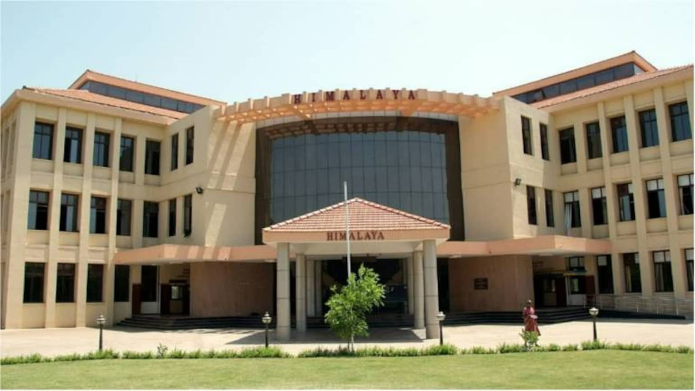
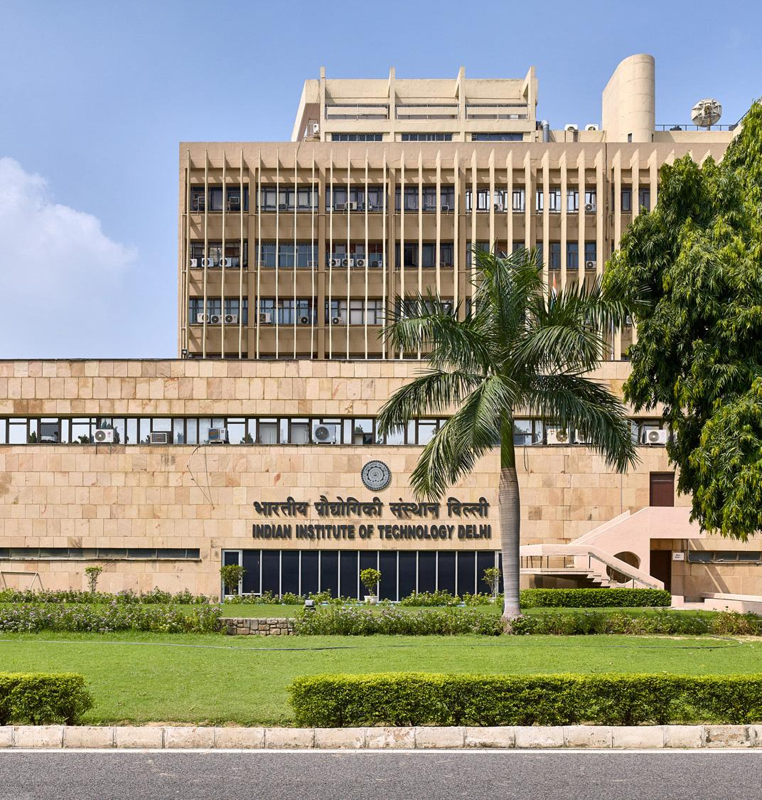
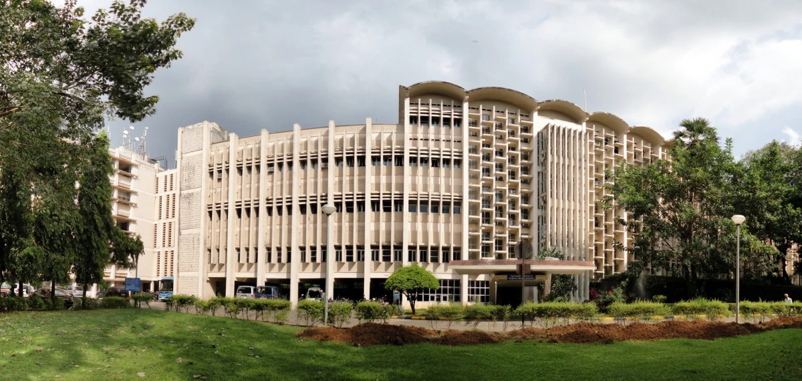
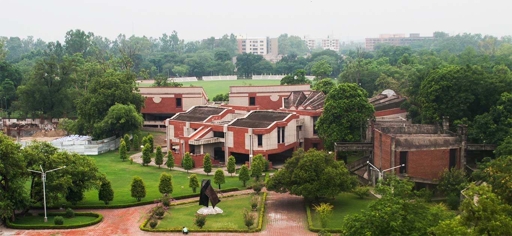
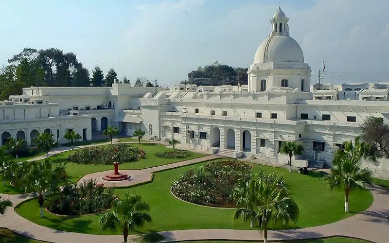

In 1854 , after the completion of the canal and Thomason's death, it was renamed the Thomason College of Civil Engineering by Proby Cautley, the designer and projector of the canal. It was renamed University of Roorkee in 1949, and again renamed IIT Roorkee in 2001. The institution has 22 academic departments covering Engineering, Applied Sciences, Humanities & Social Sciences and Management programs with an emphasis on scientific and technological education and research. Founded in 1959 with technical, academic and financial assistance from the then government of West Germany, IITM was the third Indian Institute of Technology established by the Government of India. IIT Madras has consistently ranked as the best engineering institute in India by the Ministry of Education's National Institutional Ranking Framework since the ranking's inception in 2016.
IIT Delhi, officially the Indian Institute of Technology Delhi, is a public institute of technology located in Delhi, India. It is one of the 23 Indian Institutes of Technology created to be Centre of Excellence for India's training, research and development in science, engineering and technology. Established in 1961, it was formally inaugurated in August 1961 by Humayun Kabir, Minister of Scientific Research & Cultural Affairs. The first admissions were made in 1961. The current campus has an area of 320 acres (or 1.3 km2) and is bound by the Sri Aurobindo Marg on the east, the Jawaharlal Nehru University Complex on the west, the National Council of Educational Research and Training on the south, and the New Ring Road on the north. It is flanked by Qutb Minar and the Hauz Khas monuments The institute was later decreed in the Institutes of National Importance under the Institutes of Technology Amendment Act, 1963, and accorded the status of a full University with powers to decide its academic policy, conduct its examinations, and award its degrees.
The Indian Institute of Technology Bombay (IIT Bombay) is a public research university and technical institute in Mumbai, Maharashtra, India. IT Bombay was founded in 1958. In 1961, the Parliament decreed IITs as Institutes of National Importance. A committee formed by the Government of India recommended the establishment of four higher institutes of technology to set the direction for the development of technical education in the country in 1946. Planning had begun in 1957 and the first cohort of 100 students was admitted in 1958. Since its establishment in Powai, the institute has expanded to include more than 584 major buildings, with a combined area of more than 2.2 square kilometers. IIT Bombay is known for its 4-year, 5-year & 2-year programmes for which the entrance is through the Joint Entrance Examinations (JEE), Joint Admission Test for Masters (JAM) and Graduate Aptitude Test in Engineering (GATE). Degrees offered in the university include the four-year Bachelor of Technology (B.Tech.), the two- or three-year Master of Technology (M.Tech.), the four-year Bachelor of Science (B.S.), the two-year Master of Science (M.Sc.) and the five-year Inter-Disciplinary Dual-Degree Programme (IDDDP) among many others. It also has a comprehensive graduate program offering doctoral degrees in science, technology, engineering and mathematics. It currently has a total of 15 academic departments, 20 additional education centres, a school of excellence and four interdisciplinary programmes including a management programme and industrial design programmes.
Indian Institute of Technology, Kanpur, established in 1959, is one of the premier institutions established by the Government of India. The aim of the Institute is to provide meaningful education, to conduct original research of the highest standard and to provide leadership in technological innovation. Indian Institute of Technology Kanpur (IIT Kanpur) is a public institute of technology located in Kanpur, Uttar Pradesh, India. It was declared an Institute of National Importance by the Government of India under the Institutes of Technology Act. IIT Kanpur is ranked among the most prestigious academic institutions in India. With a lush green campus spreading in massive 1055 acres . IIT K was the first institute to offer Computer science , which started in year 1963. Also it is the only IIT in India to own 2 small size aircrafts and a air strip and an Open Air Theater (OAT).. The institution was established in 1959, as one of the first Indian Institutes of Technology, the institute was created with the assistance of a consortium of nine US research universities as part of the Kanpur Indo-American Programme (KIAP).
Indian Institute of Technology Roorkee (abbreviated IIT Roorkee) is a technical university located in Roorkee, Uttarakhand, India. It is the second oldest engineering institution in India, and was founded as the College of Civil Engineering in North-Western Provinces in 1847 by the Lieutenant-Governor, James Thomason, in order to train officers and surveyors employed in the construction of the Ganges Canal. In 1854 , after the completion of the canal and Thomason's death, it was renamed the Thomason College of Civil Engineering by Proby Cautley, the designer and projector of the canal. It was renamed University of Roorkee in 1949, and again renamed IIT Roorkee in 2001. The institution has 22 academic departments covering Engineering, Applied Sciences, Humanities & Social Sciences and Management programs with an emphasis on scientific and technological education and research.